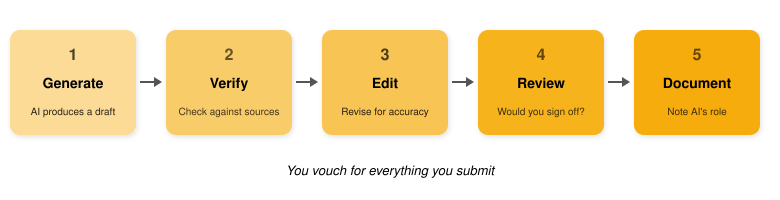

Part 2
October 6, 2026
Natalie Gill
Bioinformatician II
Reusable Instructions
Most tools let you attach persistent context that applies to every chat in a workspace so you can avoid pasting the same information over and over again.
CLAUDE.md or AGENTS.md file in the project folder serves the same purposeMannered prose substitutes metaphor and flourish for direct statement. Instead of “a parameter worth varying,” the mannered writer produces “a dial worth turning.” Instead of “this point still matters,” they write “this point earns its keep.” The phrases exist to display the writer, not to convey the idea, and readers can tell. That is why mannered prose irritates: it makes the reader work harder so the writer can perform. It is also imprecise. Metaphors drag in connotations the writer did not choose and cannot control. The fix is to say what you mean. When a literal phrase is available, use it.
Turn a task you have already done with Claude into a skill.
“Turn the workflow in this conversation into a skill I can reuse. Keep the steps that worked, leave out details specific to this one case, and write a description that says when the skill should be used.”
Think of it as: What did it produce? How did it get there? How well did it work with you?
Check every AI output against four criteria:
Watch out for these frequent mistakes:
Running the same query through Claude and ChatGPT can feel like a second opinion. It isn’t.
Use cross-model/cross-session comparison to surface things worth investigating, not to validate correctness.
When you’re learning something new, you can’t rely on your own expertise to spot errors. Do what you can first:
Then reach out to a subject matter expert.
If you do, disclose that it’s AI-generated. Reviewing AI output takes a different kind of attention than reviewing human work. Plausible-sounding mistakes appear in unfamiliar places, so experts need to know what they’re reading before they can review it well.
Evaluate how the AI is working with you, not just what it produces.
Sycophancy is the tendency to tell you what you want to hear instead of what is accurate
Consider stopping when:
The goal is to save time and improve quality. If AI isn’t doing both, switch approaches
Let’s test how well AI handles the cutting edge of your field.
Open Claude, turn on Research mode, and ask it to summarize recent progress on a topic where you have genuine expertise.
Pick a topic that satisfies these criteria:
“Summarize the current state of research on [your topic] in 500-800 words, focusing on key findings from the last 2 years. Include any ongoing debates or unresolved questions in the field.”
Research mode takes a while, so we’ll take a 10-minute break while it runs, then review the results together
Read through the AI’s summary. Look for:
Reflect: What did the AI get right? What would a non-expert not have caught?
Many researchers already use LLMs to write bioinformatics code. For the Bioinformatics Core’s full stance, see our position paper on responsible AI use in computational biology.
The discernment rule applies here too:
If you cannot evaluate the correctness of the code, you should not be using LLMs to write it
Bioinformatics code that looks right but is subtly wrong silently corrupts your results. AI can make arbitrary analysis decisions:
commit or push so you can review what has changedNew to Git? Try GitHub’s Hello World tutorial
ATGC is GCAT/init creates a CLAUDE.md file that the agent reads at the start of every session
AGENTS.md for the same purpose/compact: summarizes the current context window to avoid context rot/clear: starts a new conversation to avoid context rotCreating with AI carries risks that are easy to overlook until they bite:
Using AI heavily for critical tasks can erode skills you still need, or prevent you from building them in the first place.
Evidence:

If someone would want to know AI was involved, disclose it.
In small groups, discuss each scenario:
Let’s discuss your questions about using AI in research.
Some topics to consider:
Learn the concepts: the products will change, but the concepts transfer
AI is a powerful tool for research, but it cannot replace your judgment
Thanks to Anthropic for providing temporary Claude account upgrades for workshop attendees and for the AI Fluency framework that inspired this workshop (CC BY-NC-SA 4.0).
Claude (Anthropic) was used as an aid in developing and adapting materials for this workshop. All content was reviewed and approved by the workshop instructor.
Single Cell RNA-Seq Analysis Using R
October 12, 2026 9:30am-12:00pm PDT
Introduction to Pathway Analysis
October 15, 2026 1:00-4:00pm PDT
Statistics of Enrichment Analyses Methods
October 22, 2026 1:00-3:00pm PDT